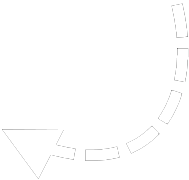

Ha már itt tetszik lenni, az azt jelenti,
hogy kézhez kapta a képeslapot amit küldtem.
Nagyon köszönöm hogy elolvasta a kis levelemet,
és örülök, hogy folytatja mesélni valóm olvasását :))
Húzza az egeret a kép fölé

Nagyon sok idő eltelt azóta, hogy elballagtunk már az
iskolából. Még emlékszem, néhány óra azzal telt el, hogy
a címét szerettük volna megtudni öntől, képeslap küldés céljából.
Úgy érzem, elérkezett az idő, hogy felhasználjam e címet arra,
hogy tájékoztassam önt a gimi utáni első évemről.
Szerettem volna korábban küldeni képeslapot, és már körbejártam a várost ahol élek, múzeumokat, szuvenírboltokat,
de sehol sem árultak képeslapot, és nem is tudta senki se megmondani, hogy hol tudnék kapni. Még a szomszédos
városban is kerestünk Lucával, amikor kijött hozzám tavasszal látogatóba! Végül, megkértem az egyik moldovai
lányt, hogy amikor hétvégén felutazik Koppenhágába, hozzon nekem egy képeslapot (ott tudtam hogy van). De ez már
a sztorinak a vége, úgyhogy inkább elkezdem az elején:
Nyáron felvettek egy dán egyetemre, a VIA University
College Horsens-i kampuszára informatika szakra. Bár
ez volt a második egyetem amit Dániában megjelöltem, így
utólag jobban örülök hogy ide kerültem mint Koppenhágába.
Tehát miután megkaptam az értesítést hogy felvettek, a családdal
kiutaztunk 2 hétre meglátogatni és felfedezni az országot,
elhelyezni az új lakásban, saját életemre állítani. Megnéztük
Koppenhágát, majd Aarhusban is töltöttünk kis időt, végül Horsens-be
érkeztünk. Berendeztük a lakást, utolsó este tartottunk egy búcsú vacsorát,
és rajtam kívül mindenki (anya apa Luca) visszautazott.
Ekkor kezdődtek a gólyanapok az egyetemen, ahol harmadik szemeszterből már
rutinos diákok vezettek minket körbe a kampuszon, bemutató előadásokat
tartottak, és a város egy részét is megmutatták. Horsens egyébként egy
nagyon aranyos kis város, nagyjából 70 000-en élnek itt. Dánia közepén
fekszik, egy kis saját tengerparttal is rendelkezik (inkább fjord, de nem is lényeges annyira).
Az emberek eszméletlen kedvesek, szinte mindenki tud angolul, így
nincs problémám kommunikálni a helyiekkel. A dán nyelv is egyre
jobban megy, sokszor már a vendégeimmel (ide még visszatérek) is
az alaphelyzeteket dánul tudom lekezelni.
Az oktatás angol nyelven zajlik, és tavaly szeptemberhez képest rengeteget fejlődtem angolból is, és
informatikából is, nagyon élvezek suliba járni. Nekem kicsit könnyű az egyetem, mivel előtte gimiben 2 évet
programoztam, így sok informatikai koncepciót már tudtam a többiek előtt, és így mindenből kitűnő lettem az első
félév végén. Itt hetes jegyrendszer van, ami azt jelenti, hogy a jegy lehet -3, 0, 2, 4, 7, 10 vagy 12. Mínusz
hármat akkor kap valaki, ha be se jár órákra, vagy vizsgára se megy el, a nulla az még bukó jegy, a többivel
mind tovább engednek.
Nekünk fél évente a szemeszter végén, miután befejeződött az tanítási időszak, nagyjából 3 hét alatt egy
projektet is véghez kell vinni egy kisebb csapattal, amit még a félév elején kell alakítani. Idén ugyanazt a jól
bevált csapatot alakítottuk meg, mint tavaly, akkor csak a mi csapatunk kapott 12-es jegyet a projekt munkánkra.
Szeretem a projektmunkát, mivel ahhoz hogy sikeresen véghez vigyük, szinte minden tudást amit a félév alatt
szereztünk, bele kell raknunk, és ráadásul a csapatmunkában is sokat fejlődünk az időszak alatt.
Ami nagyon szokatlan volt még tavaly szeptemberben, hogy Dániában a munka és az oktatás világában is
eszméletlenül kicsi a hierarchikus hozzáállás (nem tudom hogy ez-e a jó szó erre). Tehát ez azt jelenti, hogy a
tanárainkat tegezzük, ráadásul a keresztnevükön szólítjuk őket a folyosón is, és ha emailben is. Rendkívül
furcsa volt, hogy az egyetemi professzoromnak úgy köszönök, hogy „Hey Richard”.
Idén februárban elkezdtem WOLT ételfutárként dolgozni, és
keresek annyit, hogy a mellékállásomból teljesen fenn tudom
tartani magam, a lakást is már magam fizetem, az ételt, és még
félre is tudok kicsit rakni. Így anyagilag már elszakadtam a
szüleimtől, ami hihetetlenül jó érzés.
Köszönöm szépen, hogy elolvasta kis levelemet! - Gergő